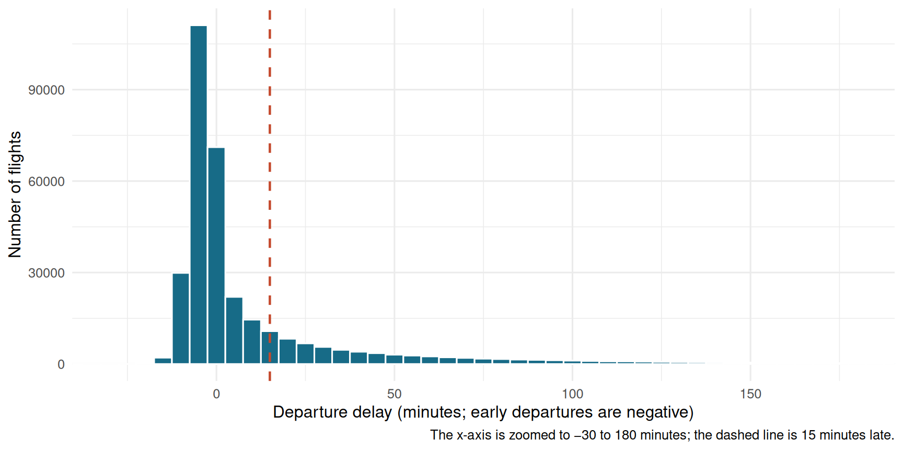

In 2013, 336,776 flights departed from New York City’s three major airports: JFK, LaGuardia (LGA), and Newark (EWR). This project explores flight delay patterns across scheduled departure times and overall delay distributions.
Key takeaway: While flight delays can feel random, clear patterns emerge over the course of a day. However, observational data alone shows associations—not direct causes like weather or mechanical issues.
Each dot below represents one flight with a recorded departure delay. The horizontal axis is its scheduled departure time; the vertical axis is how many minutes early or late it actually departed. The view is zoomed to delays between 30 minutes early and 3 hours late to show the primary cluster.
Figure 1: Each point is a flight; the y-axis is zoomed to show the main cluster.
Key Takeaways from the Scatter Plot
Early morning flights are most reliable: Flights scheduled between 5:00 AM and 8:00 AM cluster tightly near zero delay.
Delays build throughout the day: As planes fly multiple legs, earlier delays propagate, creating a taller spread of delays in the afternoon and evening.
Many flights depart early: Negative delay values (below 0) represent flights leaving up to 15–30 minutes ahead of schedule.
Extreme delays concentrate late: Delays exceeding 2 hours become noticeably more frequent after 3:00 PM.
This histogram summarizes flight records into 5-minute bins. The bar heights show how many flights fell into each delay range, and the red dashed line marks the 15-minute delay mark.
Code
flights |>filter(!is.na(dep_delay)) |>ggplot(aes(x = dep_delay)) +geom_histogram(binwidth =5, fill ="#176B87", color ="white") +geom_vline(xintercept =15,linetype ="dashed",color ="#C4492D",linewidth =0.8 ) +coord_cartesian(xlim =c(-30, 180)) +labs(x ="Departure delay (minutes; early departures are negative)",y ="Number of flights",caption ="The x-axis is zoomed to −30 to 180 minutes; the dashed line is 15 minutes late." ) +theme_minimal(base_size =12)

Figure 2: Departure-delay counts for 328,521 flights with recorded values.
Key Takeaways from the Histogram
Strong peak near zero: The single most common outcome is departing right on time or within 5 minutes of schedule.
Most flights leave on time: Out of 328,521 flights, 200,089 (about 61%) left on time or early.
The 15-minute threshold: Under FAA standards, flights delayed under 15 minutes are considered on-time. Only 70,774 flights (about 21.5%) were officially delayed.
Right-skewed distribution: Long delays decrease sharply in frequency—delays over 2 hours are relatively rare compared to small delays.
Test your intuition! Can you guess whether a flight was delayed based on its departure airport, time, and carrier?
✈️ Flight Delay Guesser
An FAA delayed flight is more than 15 minutes late. Can you beat the odds?
Loading flight...
Score: 0 / 0
Streak: 0 🔥
The data come from the nycflights13 R package. Each row represents a scheduled flight from JFK, LGA, or EWR in 2013. Missing departure delays generally correspond to flights that did not depart, so the charts describe flights with an observed departure—not cancellations.